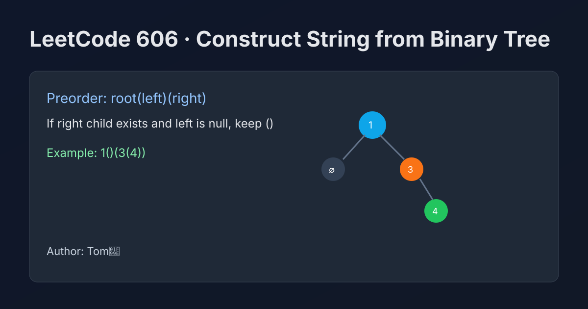

LeetCode 606: Construct String from Binary Tree (Preorder with Necessary Parentheses)
LeetCode 606Binary TreeDFSStringToday we solve LeetCode 606 - Construct String from Binary Tree.
Source: https://leetcode.com/problems/construct-string-from-binary-tree/

English
Problem Summary
Convert a binary tree to a string using preorder traversal. Use parentheses to represent children, and omit unnecessary empty pairs, except when a node has no left child but has a right child, where () is required.
Key Insight
We always output current node value first, then recursively append left and right parts. Parentheses rules are structural:
- If both children are empty: just value.
- If only left exists: val(left).
- If right exists: must include left placeholder, so val(left)(right) and when left is missing use val()(right).
Algorithm
- DFS preorder recursion.
- Append node value.
- If left exists or right exists, append (leftString).
- If right exists, append (rightString).
- Return built string.
Complexity Analysis
Time: O(n).
Space: O(h) recursion stack, where h is tree height.
Reference Implementations (Java / Go / C++ / Python / JavaScript)
class Solution {
public String tree2str(TreeNode root) {
if (root == null) return "";
if (root.left == null && root.right == null) return String.valueOf(root.val);
if (root.right == null) return root.val + "(" + tree2str(root.left) + ")";
return root.val + "(" + tree2str(root.left) + ")(" + tree2str(root.right) + ")";
}
}func tree2str(root *TreeNode) string {
if root == nil {
return ""
}
if root.Left == nil && root.Right == nil {
return strconv.Itoa(root.Val)
}
if root.Right == nil {
return strconv.Itoa(root.Val) + "(" + tree2str(root.Left) + ")"
}
return strconv.Itoa(root.Val) + "(" + tree2str(root.Left) + ")(" + tree2str(root.Right) + ")"
}class Solution {
public:
string tree2str(TreeNode* root) {
if (!root) return "";
if (!root->left && !root->right) return to_string(root->val);
if (!root->right) return to_string(root->val) + "(" + tree2str(root->left) + ")";
return to_string(root->val) + "(" + tree2str(root->left) + ")(" + tree2str(root->right) + ")";
}
};class Solution:
def tree2str(self, root: Optional[TreeNode]) -> str:
if not root:
return ""
if not root.left and not root.right:
return str(root.val)
if not root.right:
return f"{root.val}({self.tree2str(root.left)})"
return f"{root.val}({self.tree2str(root.left)})({self.tree2str(root.right)})"var tree2str = function(root) {
if (!root) return "";
if (!root.left && !root.right) return String(root.val);
if (!root.right) return `${root.val}(${tree2str(root.left)})`;
return `${root.val}(${tree2str(root.left)})(${tree2str(root.right)})`;
};中文
题目概述
把二叉树按先序遍历转换为字符串，使用括号表示子树。可以省略不必要的空括号，但如果某个节点没有左子树却有右子树，则左子树的空括号 () 不能省略。
核心思路
按先序顺序拼接：先节点值，再左子树，再右子树。括号规则是关键：
- 左右都空，只输出节点值。
- 只有左子树，输出 val(left)。
- 有右子树时必须保留左子树位置，输出 val(left)(right)；若左为空则是 val()(right)。
算法步骤
- 递归 DFS 先序遍历。
- 先追加当前节点值。
- 当左或右存在时，追加左子树括号块。
- 当右存在时，再追加右子树括号块。
- 返回拼接结果。
复杂度分析
时间复杂度：O(n)。
空间复杂度：O(h)（递归栈）。
多语言参考实现（Java / Go / C++ / Python / JavaScript）
class Solution {
public String tree2str(TreeNode root) {
if (root == null) return "";
if (root.left == null && root.right == null) return String.valueOf(root.val);
if (root.right == null) return root.val + "(" + tree2str(root.left) + ")";
return root.val + "(" + tree2str(root.left) + ")(" + tree2str(root.right) + ")";
}
}func tree2str(root *TreeNode) string {
if root == nil {
return ""
}
if root.Left == nil && root.Right == nil {
return strconv.Itoa(root.Val)
}
if root.Right == nil {
return strconv.Itoa(root.Val) + "(" + tree2str(root.Left) + ")"
}
return strconv.Itoa(root.Val) + "(" + tree2str(root.Left) + ")(" + tree2str(root.Right) + ")"
}class Solution {
public:
string tree2str(TreeNode* root) {
if (!root) return "";
if (!root->left && !root->right) return to_string(root->val);
if (!root->right) return to_string(root->val) + "(" + tree2str(root->left) + ")";
return to_string(root->val) + "(" + tree2str(root->left) + ")(" + tree2str(root->right) + ")";
}
};class Solution:
def tree2str(self, root: Optional[TreeNode]) -> str:
if not root:
return ""
if not root.left and not root.right:
return str(root.val)
if not root.right:
return f"{root.val}({self.tree2str(root.left)})"
return f"{root.val}({self.tree2str(root.left)})({self.tree2str(root.right)})"var tree2str = function(root) {
if (!root) return "";
if (!root.left && !root.right) return String(root.val);
if (!root.right) return `${root.val}(${tree2str(root.left)})`;
return `${root.val}(${tree2str(root.left)})(${tree2str(root.right)})`;
};
Comments